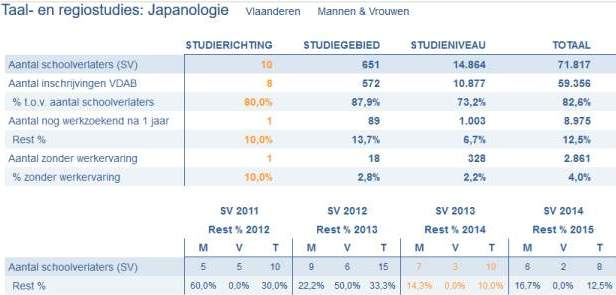

Zoals velen in mijn richting ontstond mijn interesse in Japan al op jonge leeftijd onder invloed van het zogenaamde Cool Japan: de globale verspreiding van Japanse popcultuur (muziek, televisie, games, …) die sinds de jaren ‘80 geleidelijk aan begon door te sijpelen in ook onze nationale media. Het zou, zo blijkt, zelfs een interesse worden die zodanig groeide dat ik er jaren later mijn studiekeuze door liet beïnvloeden. Vaak krijg ik bij vermelding daarvan echter nog, zoals mijn klasgenoten ongetwijfeld kunnen beamen, een hoop verbaasde blikken toegesmeten en dus ook dé klassieke hamvraag voorgeschoteld: Waarom nu juist Japanologie?
Als tweedejaars werd ik eerder dit jaar gevraagd om op een opendeurdag van onze richting een kort woordje over mijn persoonlijke ervaringen met Japanologie aan de KU Leuven, waar ik aldos ook bovenstaande vraag probeerde te beantwoorden. Toch werd ik daarna door verschillende bezorgde ouders aangesproken met enkele niet geheel onterechte vragen als “Ja maar, wat zijt ge daar nu mee?”, “Leert ge dan enkel over Japan? Oeioei, is da ni héél beperkt?” en “Is Japan nog wel relevant?”.
Om beter de oorspronkelijke vraag “Waarom Japanologie?” te beantwoorden lijkt het mij het beste om te vertrekken vanuit juist die drie bovenstaande vragen:
Vragen
“Japanologie? Dan leert ge enkel over Japan? Oeioei!”
Als je naar de onderwijsaanbod-pagina van Japanologie aan de KU Leuven gaat krijg je het volgende te zien:
Bachelor in de taal- en regiostudies: japanologie (Leuven)
Bachelor of ArtsIn de bacheloropleiding Japanologie bestudeer je in de eerste plaats het moderne Japans op een intensieve manier. De opleiding plaatst het Japans steeds centraal tegenover de achtergrond van de Japanse cultuur, geschiedenis, filosofie, economie en politiek. Je kiest een minor, wat je de mogelijkheid geeft om je eigen interesses beter in te werken in je studie.
Het spreekt voor zich dat de Japanse taal en theoretische vakken gericht op Japan centraal staan in onze richting, maar bovenstaande tekst zegt toch wat meer: Japanologie aan de KU Leuven is een onderdeel van taal- en regiostudies, en levert een Bachelor of Arts op: een diploma binnen de geestes- of sociale wetenschappen. Concreter betekent dat dat een student Japanologie een hoop vaardigheden onder de knie hoort te krijgen die op eerste zicht geen rechtstreeks verband met Japan lijken te houden maar de student vormt om genuanceerder en meer kritisch te kijken naar niet enkel Japan, maar de hele wereld .
Dat lijkt me ook logisch. Enkel kennis van een bepaalde taal of wat feitenkennis van één bepaalde regio, losstaand van diens rol tegenover de rest van de wereld, lijkt me zonder vaardigheden om te kunnen vergelijken niet bijzonder veel waard. Ondertussen worden computers steeds efficiënter in het instant-vertalen van zowel tekst als audio, en zijn er enorme digitale databanken met historische feiten die gratis geraadpleegd kunnen worden. Wat computers en software echter (nog) niet kunnen is het betekenis geven aan die data. De vaardigheden die we tijdens onze studies leren zorgen er voor dat wij uiteindelijk die leegte kunnen invullen en aldus ook als een soort ambassadeur een culturele brug tussen de verschillende natiestaten kunnen vormen.
Enkele voorbeeldjes: om de Japanse economie en politiek te kunnen begrijpen is het niet alleen belangrijk om op theoretisch vlak iets te weten over die velden, maar ook om de politieke en economische situatie uit de eigen leefwereld te begrijpen. Om ontwikkelingen in de Japanse hedendaagse pop-cultuur te begrijpen is het dan zeker weer niet mis om kennis te hebben over de historische ontwikkeling van (Japanse) literatuur, of om zich te verdiepen in antropologie, in ontwikkelingen in het terrein van geschiedschrijving, enzovoort.
We kijken eens naar een verkort lijstje van zowel verplichte- als keuzevakken binnen de optie culturele minor2. Vakken die rechtstreeks verband hebben met Japan of het Aziatisch continent (vakken als “Inleiding tot de Oost-Aziatische kunst”, vakken uit Sinologie, de Koreaanse taal, enzovoort) heb ik even weggelaten.
Verplichte vakken
- Inleiding tot de wijsbegeerte, Religie, zingeving en levensbeschouwing, Informatiekunde, Sociologie, Recht, Inleiding tot de sociale en culturele antropologie
Optie Geschiedenis en Literatuur
- Inleiding tot de studie van de Europese literatuur en cultuur: na 1800, Geschiedenis van de nieuwe tijd, Geschiedenis van de middeleeuwen, Geschiedenis van de nieuwste tijd, Nederlandse letterkunde I: moderne literatuur, Algemene literatuurwetenschap I
Andere keuzevakken
- Mediacultuur, Inleiding tot de beeldanalyse, Taalverwerving, Algemene taalwetenschap I, Inleiding tot de economie, Geschiedenis van Rusland, Inleiding tot de Slavische wereld, Consumer Behaviour, Academisch Nederlands, Human Rights, Economische ontwikkelingen van Japan, Griekse mythologie en godsdienst, Geschiedenis van de internationale betrekkingen, Hedendaagse politieke en sociale theorieën: marxistische en socialistische stromingen, Sanskriet, East-West Perspectives in Philosophy, Genderstudies
Een van onze docenten haalde in de eerste les van het vak “Ruimtelijke Organisatie van Japan” een metafoor aan die me sterk bijbleef: waar studenten aan richtingen binnen de exacte wetenschappen zich omhoog werken door een ladder te beklimmen binnen het eigen domein, worden studenten binnen studiedomeinen zoals Japanologie verwacht omhoog te klimmen door middel van het bouwen van een piramide. Elk nieuw veld waarover geleerd wordt representeert een nieuw bouwblok aan die pyramide. Door het bestuderen en beheersen van een hoop verschillende velden (zij het nu politiek, geografie, literatuur of filosofie) creêert men paradoxaal juist een verdere specialisatie in de eigen richting.
Deze stelling sluit naadloos aan bij de volgende vraag:
“Wat zijt ge daar nu mee?”
Het cliché gaat dat richtingen binnen Letteren, waartoe Japanologie behoort, het niet goed doen op de arbeidsmarkt. Met een verzwakte economie is er minder vraag naar dergelijke diplomas, en cijfers worden dan naar hartelust rond onze oren gesmeten: zo zouden bijvoorbeeld volgens dit vacature.com artikel uit 2010, gebaseerd op cijfers van de VDAB, 25% van de afgestudeerden met een academische bachelor taal-en letterkunde nog steeds werkloos zijn na 1 jaar. Ook een recenter jobat.be artikel uit 2013 plaatst Masters in Oosterse talen en culturen als een slechte keuze. De werkelijkheid is uiteraard meer complex dan aangegeven. Uit diezelfde studie van de VDAB stond in 2011 één schoolverlater met een master in “Taal en regiostudies: Oude Nabije Oosten” geregistreerd. Diezelfde schoolverlater stond tevens na 1 jaar, in 2012, bij de VDAB geregistreerd als werkzoekende, waardoor het percentage werkzoekenden na 1 jaar binnen “T&R: Oude Nabije Oosten” op dat moment als 100% werd geclassificeerd. in 2014 waren er dan weer 3 schoolverlaters in die richting, die in 2015 niet stonden geregistreerd als werkzoekenden: een percentage van 0% werkloosheid bij afgestudeerden “T&R: Oude Nabije Oosten”.3 De situatie is vergelijkbaar voor Japanologie (zie foto beneden), dus staar je zeker niet blind op dergelijke cijfers.

Uiteraard houdt de richting Japanologie aan de KU Leuven daar wel rekening mee. Een van de twee minors, de economische minor, richt zich sterk op het verwerven van economische vaardigheden rechtstreeks inzetbaar op de arbeidsmarkt.4 Binnen Letteren heeft Japanologie een uitstekende reputatie op gebied van het verwerven van digitale geletterdheid, en sinds het schooljaar van 2016-2017 wordt ook de master Japanologie een tweejarige master, met meer nadruk op stages en het opbouwen van praktische vaardigheden. Daarnaast is het mogelijk om tijdens een van de masterjaren al een attest als leerkracht Japans te bemachtigen. Als laatste wordt het behalen van een extra diploma - een extra specialisatieveld - ook sterk aangemoedigd.
Over ervaringen in de bedrijfswereld kan ik zelf nog niet meespreken. Wel lijkt mij, zoals in elke richting, het profileren tijdens de studiejaren en het kweken van extracurriculaire competenties iets dat zeker niet verwaarloosd mag worden. Waar ik eigenlijk eerder op wil focussen binnen de context van deze vraag is de waarde van onze richting (en andere richtingen binnen Letteren of zelfs breder, binnen arts) niet op professioneel gebied, maar op persoonlijk gebied. Door het bestuderen van andere landen in al hun facetten, maar ook dankzij vakken als filosofie, antropologie, sociologie, enzovoort, leer je niet alleen meer over de wereld, maar ook over jezelf. Hoewel we gezien de neo-liberale waarden die gelden in onze maatschappij geneigd zijn te kijken naar de rechtstreekse toepassing van studies op de arbeidsmarkt, mogen we niet vergeten dat universiteiten meer nog een rol hebben in het ontwikkelingen van kritische, analytische denkers.
“Is Japan nog wel relevant?”
Enkele recente artikels over Japan die de Belgische mainstream media haalden5:
- Japanse keizer Akihito zinspeelt op aftreden
- President Obama bezoekt Hiroshima
- uitbreiding bevoegdheden Japans leger
- premier Abe verkleedt zich als Super Mario op slotceremonie in Rio
Het klopt dat Japan niet meer wordt aanzien als het economisch powerhouse dat het ooit was, en sinds het barsten van een economische zeepbel vast lijkt te zitten in een langdurende recessie. Niettegenstaande blijft Japan de derde grootste economie van de wereld,6 en wordt Tokio, juist zoals Londen in Europa en New York in de Verenigde Staten, gezien als het ingangspunt in het Aziatisch continent. Weeral blijkt de werkelijkheid genuanceerder dan de overheersende stereotypes, en een sterkere focus wordt daarop gegeven in vakken zoals Japanse Politiek en Japanse Economie.
Studenten Japanologie vandaag kiezen uiteraard ook niet langer uit dezelfde beweegredenen van studenten Japanologie 30 jaar geleden, die toen eerder economisch van aard neigden te zijn. De blijvende populariteit van de richting verraadt echter wel een aanhoudend belang en een niet onbelangrijke shift van economische naar culturele supermacht.
Conclusie
Er kunnen nog zoveel redenen voor- of tegen het volgen van Japanologie zijn, als je al gebeten bent door de Japan-microbe en je overtuigd bent dat dit de richting voor jou is zal het heel moeilijk worden om een andere richting met dezelfde passie en motivatie aan te vangen. Andere richtingen kunnen profijtelijkere carrièreopties opleveren, maar een richting als Japanologie biedt dan weer, hoe cliché het ook klinken mag, een heel andere soort rijkdom: die van persoonlijke verrijking. Het niet volgen van je hart, in functie van betere carrièreopties, kan leiden tot een spijt achteraf die niet meer in te halen valt.
Niettemin, wees het nu een job in een Japans bedrijf in België, een functie ergens in Japan zelf, of zelfs iets geheel ongerelateerd aan de oorspronkelijke studies: een pad vind je zeker. Met een diploma Japanologie toon je niet alleen aan een hoop academische vaardigheden en een uitstekend aanpassingsvermogen te bezitten, maar meer nog, je hebt jezelf kunnen ontwikkelen tot een rijper persoon die analytisch en met nuance rondom zich kan kijken.Sterker nog, misschien hebben we in deze tijden van groeiende onverdraagzaamheid rondom ons zelfs juist méér Japanologen en mensen met een Bachelor en/of Master in Arts nodig!
Graag wil ik concluderen door te stellen dat mocht je toch kiezen voor Japanologie – ongeacht je oorspronkelijke beweegredenen –, en openstaat voor wat ik hiervoor beschreef, je in het gezelschap van gelijkgestemden enkele van de beste jaren in je leven kan beleven, juist zoals de voorbije twee jaar al voor mij bleken te zijn.
Meer lezen?
- Nippaku: Japanologie aan de KU Leuven, wat houdt dat nu precies in?: gedetailleerde beschrijving van onze richting door een van mijn senpai, zeker eens lezen!
- Japanse Studies, KU Leuven: de homepage van onze richting, met allerlei informatie voor (potentiëel) nieuwe studenten.
-
Fushimi Inari Shrine by Stevie Poppe (https://flic.kr/p/M4Kdmk - CC BY-SA 2.0) ↩
-
De optie die ik zelf volg. Daarnaast is er ook een economische minor met een hoop verplichte en keuzevakken rond economie, maar daar ben ik minder in thuis. Een meer complete lijst van vakken staat op de onderwijsaanbod pagina van KU Leuven. ↩
-
Cijfers gebaseerd op een grootschalig telling van de VDAB. Bekijk een interactieve grafiek over alle richtingen heen op: https://www.vdab.be/trendsdoc/schoolverlaters/detail/default.shtml ↩
-
Aan de andere kant levert de culturele minor, met vakken rond Koreaanse geschiedenis, cultuur en taal, ook een eerste aanzet tot een Koreanologie in België. Naast Cool Japan kent ook Korea al een geruime tijd een sterke shift naar soft power met haar export van pop-cultuur, beter bekend als de Korean Wave. ↩
-
Met de hashtag
Japanlijken online kranten zelfs op dagelijkse basis te rapporteren over het land: http://www.standaard.be/tag/japan?page=1 ↩ -
Volgend op de Verenigde Staten en China, en gevolgd door Duitsland, Groot-Britannië en Frankrijk. Meer: https://en.wikipedia.org/wiki/List_of_countries_by_GDP_(nominal) ↩